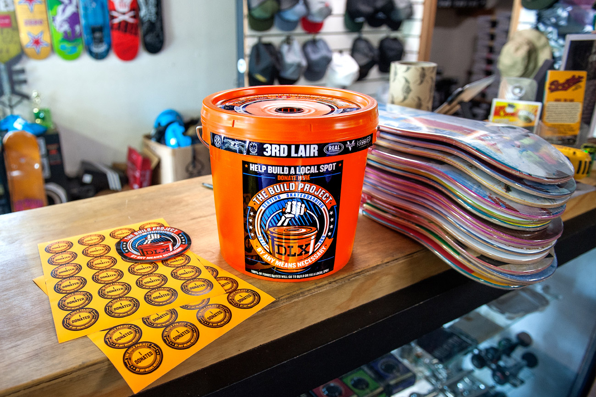
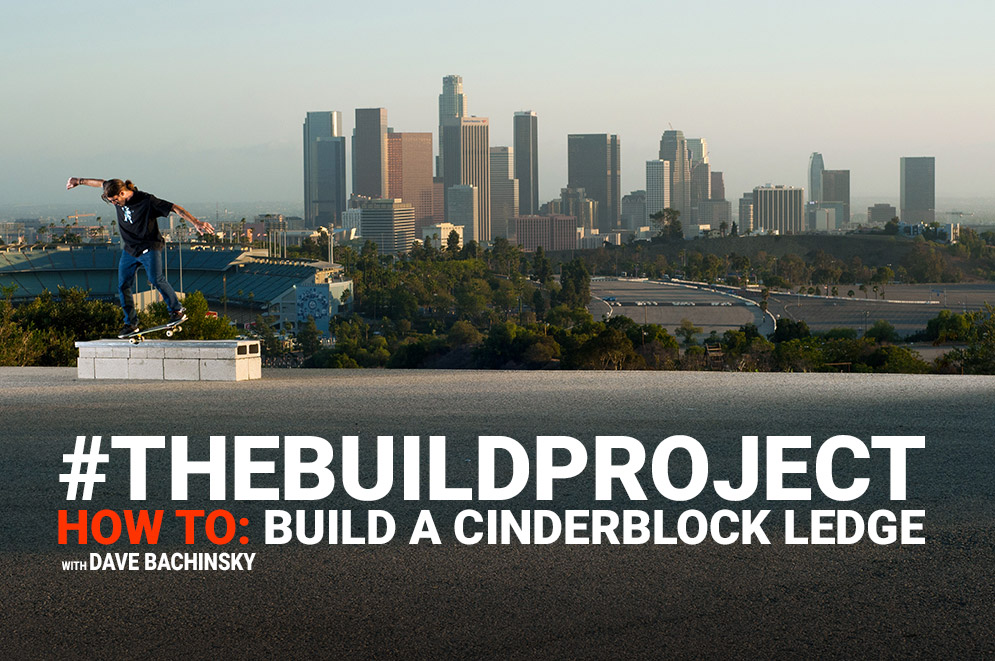
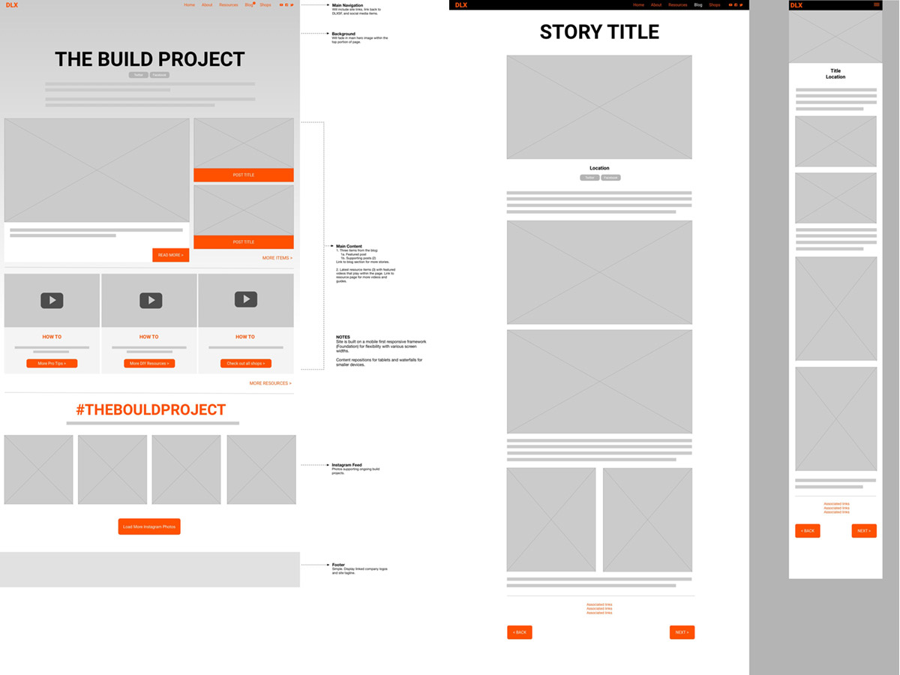
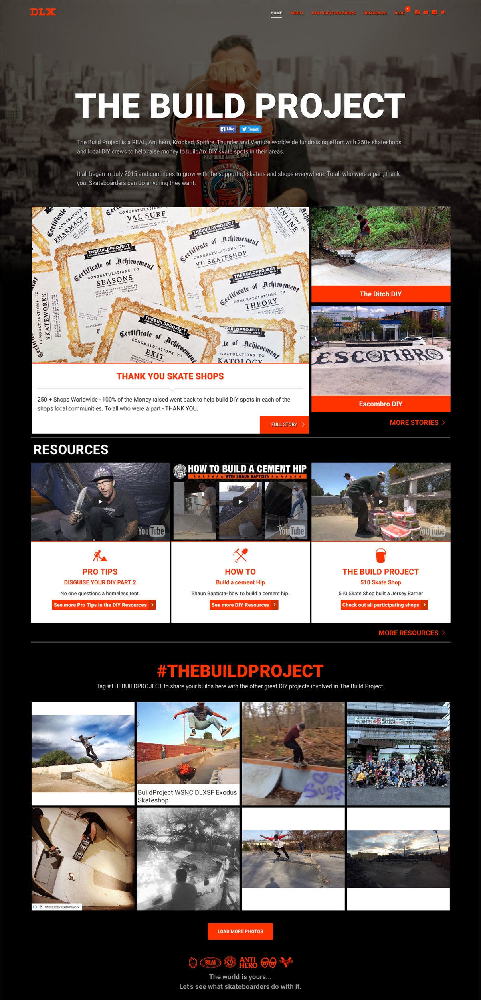
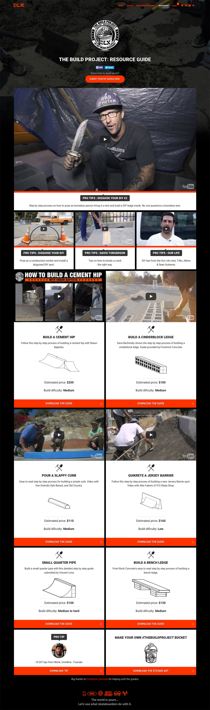
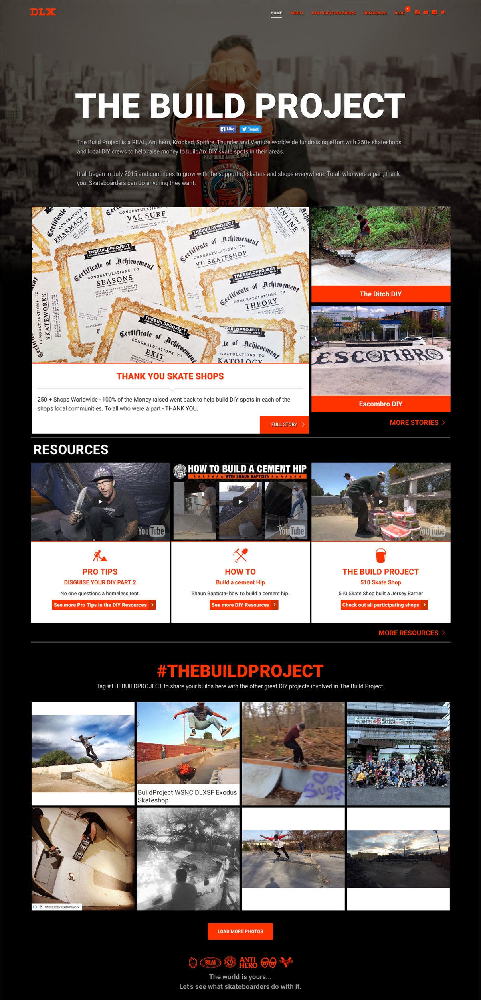
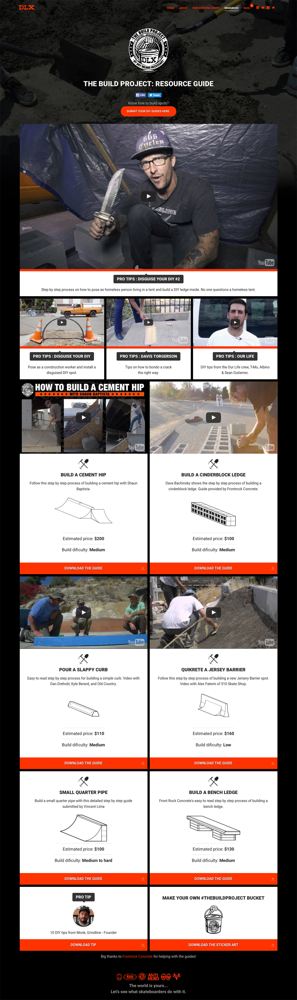
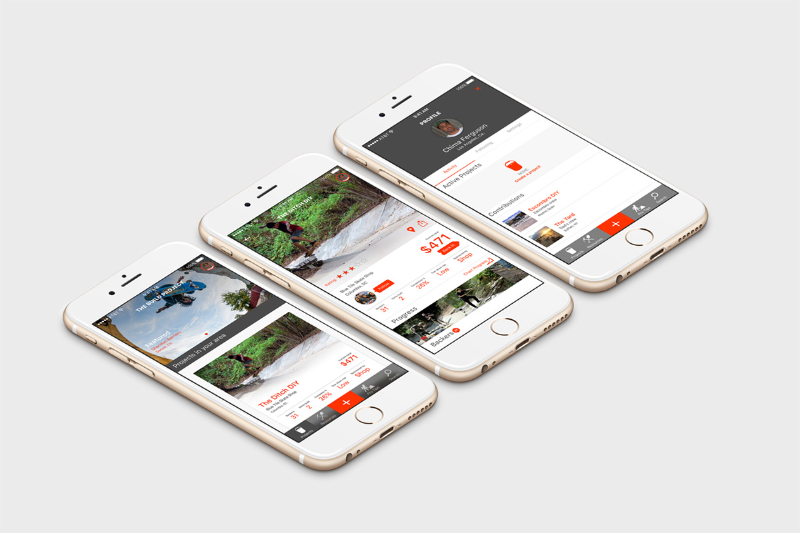

Helping to build DIY Skatespots through community.
- Visual and UI design
- Mobile first responsive web development
- Search Engine Optimization
The Story
With the many DIY project sites going on in the United States, and the world for that matter, we teamed up with local skate shops to start an incentive program to get donations for these projects. What started out as a silly idea, the bucket, grew to vast support through our curated hashtag over Instagram. Initially, the website was secondary. Basic and informational with a list of participating shoups throughout the world. 
However, as the project proceeded, we began to gather how-to video and step -by-step build resources that could help out the local community of skateboarders and DIY park builders to help them realize their dreams and build better and long lasting obstacles with the help of professionals and the community. 
Though the project has ended, the site lives on to feature ongoing efforts in the DIY community. This not only keeps the initiative alive, but helps to inspire other new-comers as well as current builders. Spots come and go, but the spirit of building your own skatepark lives on. We built in a blog section that is crafted to receive high rankings in searchbility for each story, giving the spots more views and recognition throughout the web.
The Process
Sketches and workflows for the second phase of The Build Project. 
Visual design was done within the browser for fast deployment. We knew the site was going to get build and the faster the information was out, the better. Intitially the site started with a home page, and about section and a shop list. It then began to grow with the resources section and then a blog section for any DIY crew that cared to submit a story. These have become valuable exposure for these spots, helping them out with donations.
 



The visual design of the site uses black and dark grey tones and the orange from construction buckets to give it strength without overwhealming users. Consideration for legibility was placed in the use of cards with white backgrounds that work seamlessly for mobile and desktop layouts. Minor animation details in the buttons help cue the user.
What's next
Currently the site feedback and involvement has been great, but it is only one-sided. We are in the works of creating an app that could possibly bring in even more in donations to groups that are even more remote! We aim to make each and every DIY a success story. Even the ones that fall to destruction can be considered a success. 